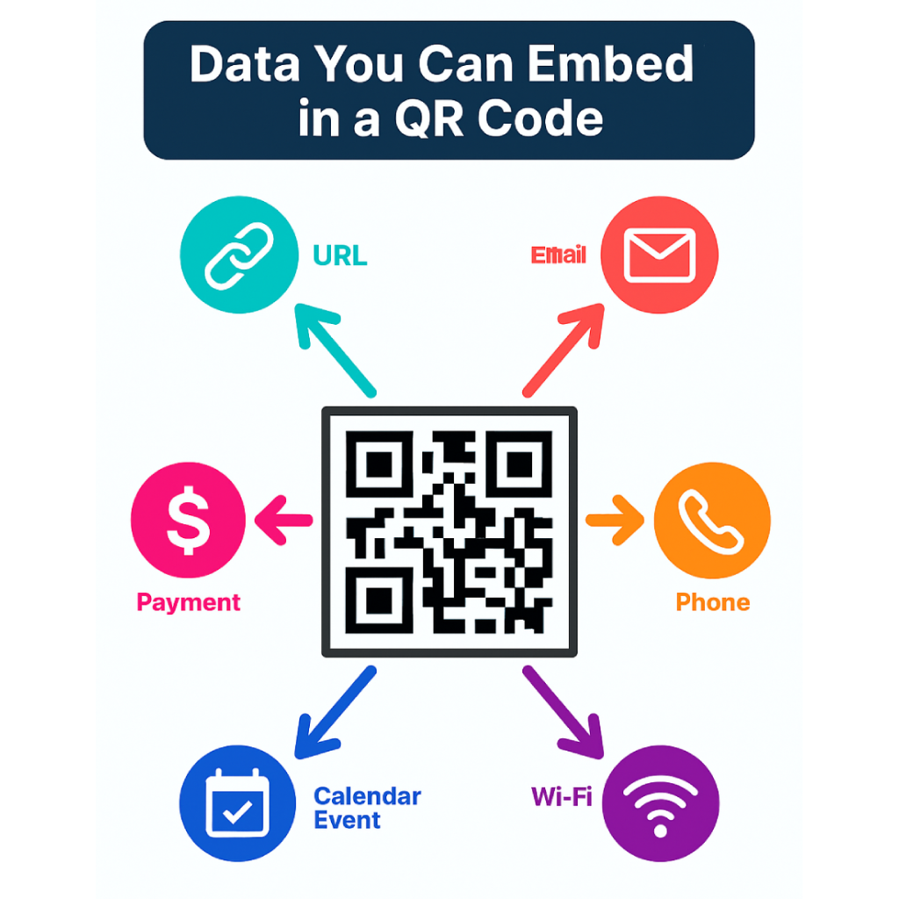

Type your message or drop a link :
Why Use Simple QR-Code Generator?
Welcome to Simple QR-Code Generator your fast, no-fuss tool for turning messages, links, and ideas into scannable QR codes. Just type, click, and download. No clutter, no sign-ups. Built with ❤️ by Arkadian, this lightweight platform is designed for speed, simplicity, and creativity. Drop your message and let your QR code do the talking.
How to create a Qr-Code?
Brief explanation about how to use the Website
üìå What Is a QR Code?
A QR code (Quick Response code) is a type of matrix barcode that stores information in a pattern of black squares on a white background. Unlike traditional barcodes, QR codes can hold much more data and are readable from any angle using a smartphone or scanner. They’re commonly used to link users directly to websites, apps, or digital content without typing anything manually. QR codes have become a staple in marketing, retail, education, and everyday life due to their speed and convenience.
⚙️ How to Generate a QR Code?
Creating a QR code is simple and fast. You start by choosing the type of content you want to encode—this could be a URL, plain text, contact details, or even Wi-Fi credentials. Then, using a QR code generator (up there!), you input your data, click a generate, and instantly receive a downloadable QR image.
ü߆ What Can You Put Inside a QR Code?
QR codes can store a wide variety of data types, making them incredibly versatile. The most common use is linking to a website, but you can also embed plain text, email addresses, phone numbers, contact cards (vCards), calendar events, Wi-Fi credentials, and even payment information. but be careful who got access can easily get back the data.
